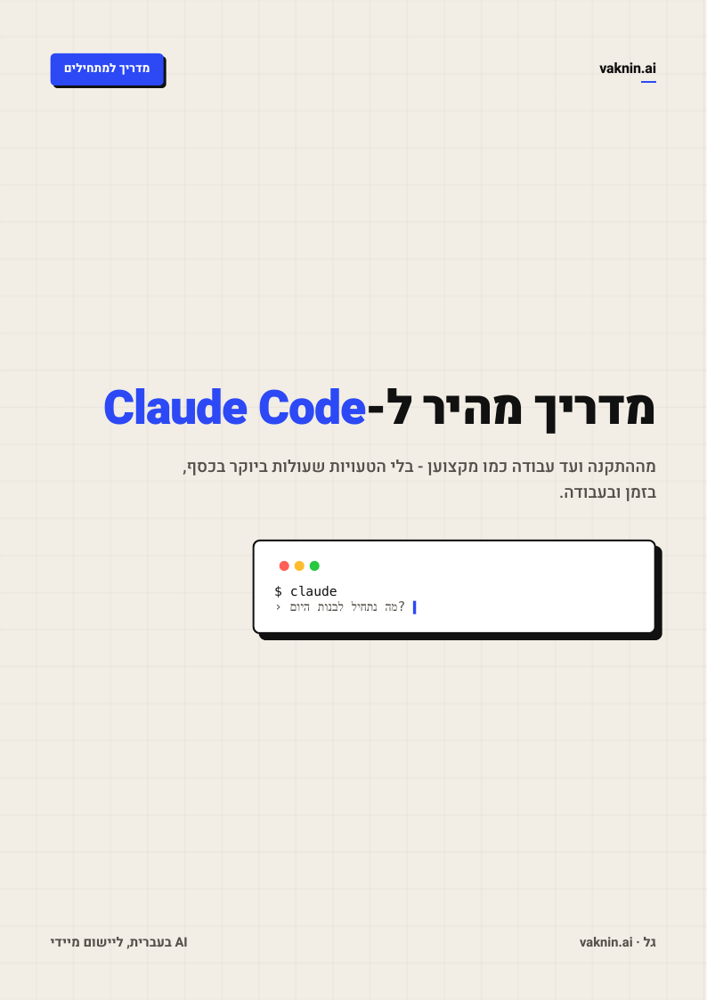
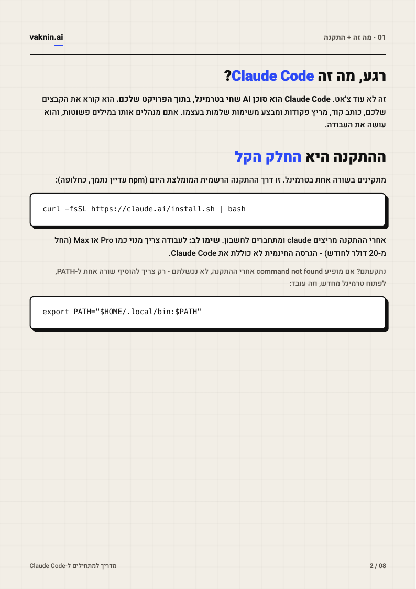
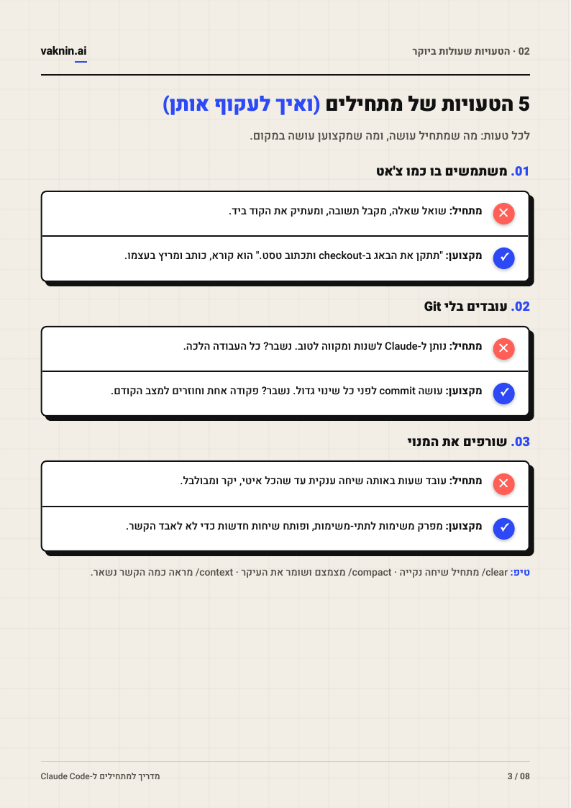
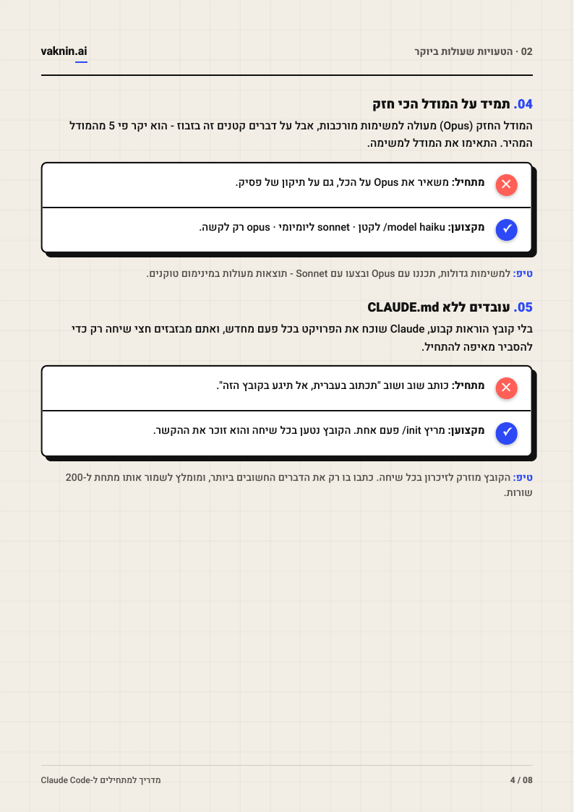
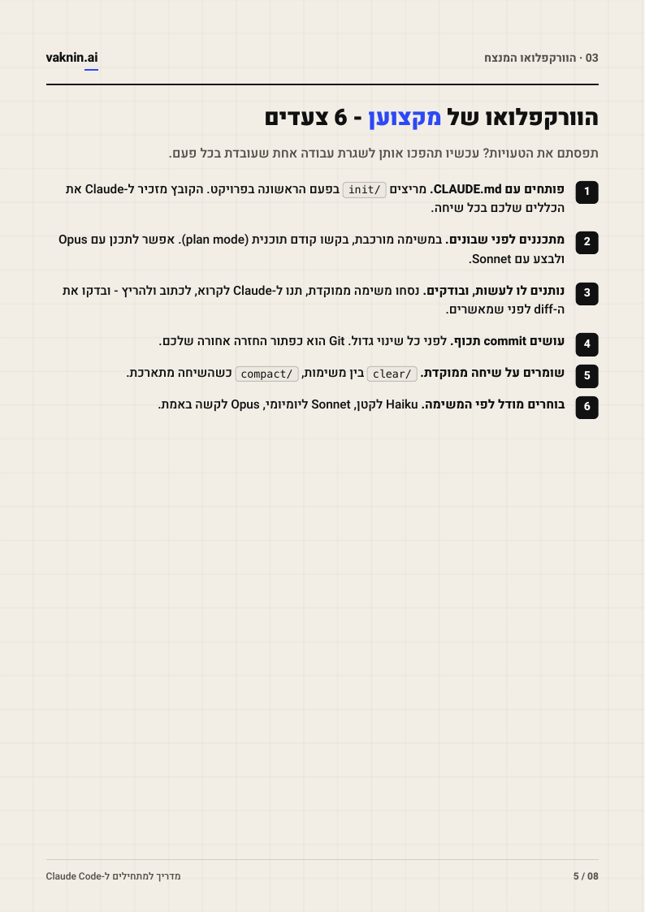
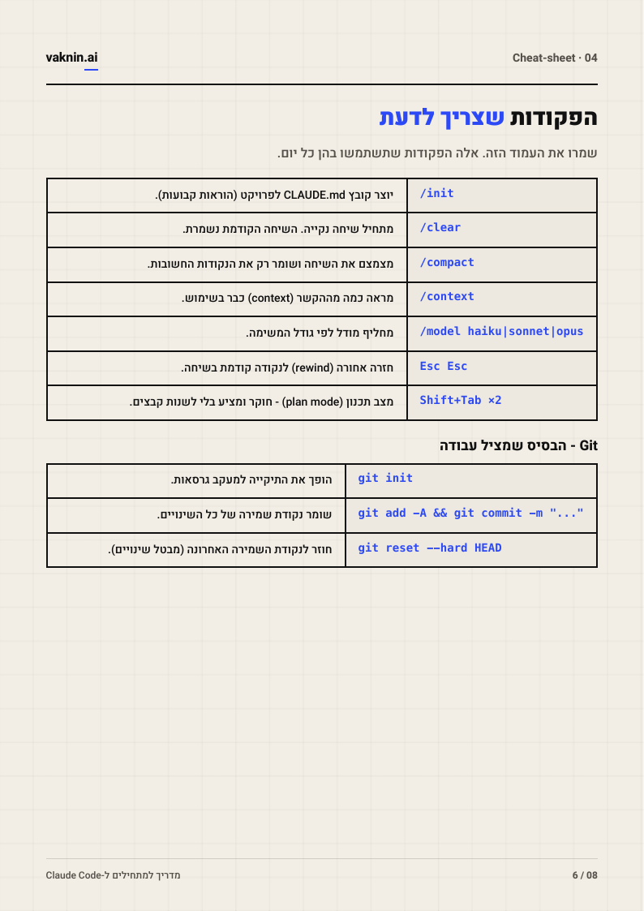
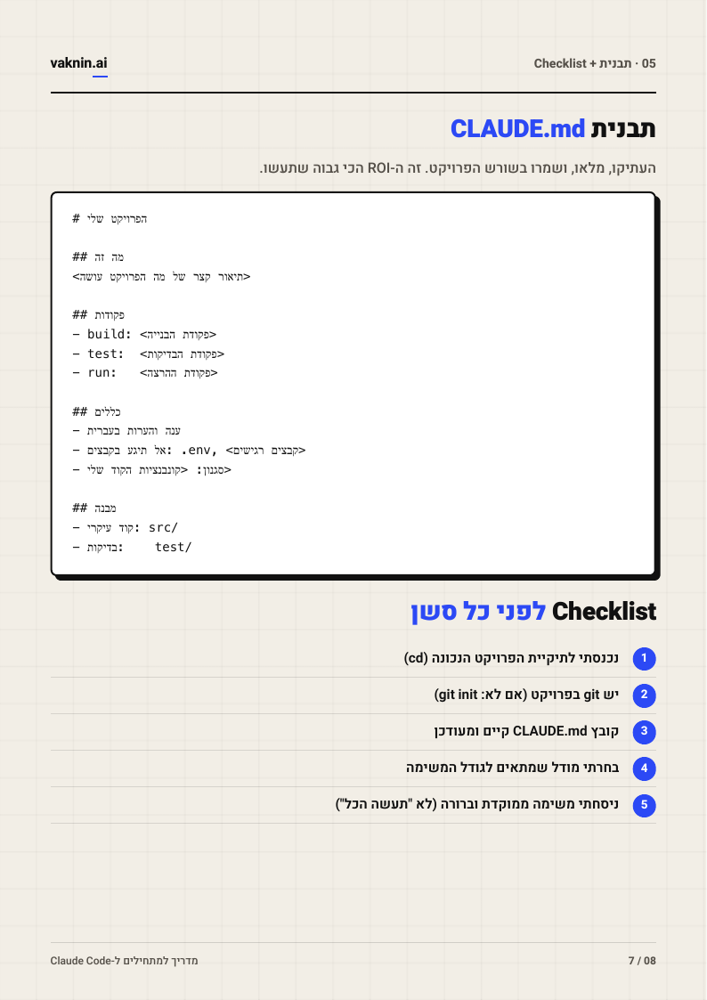
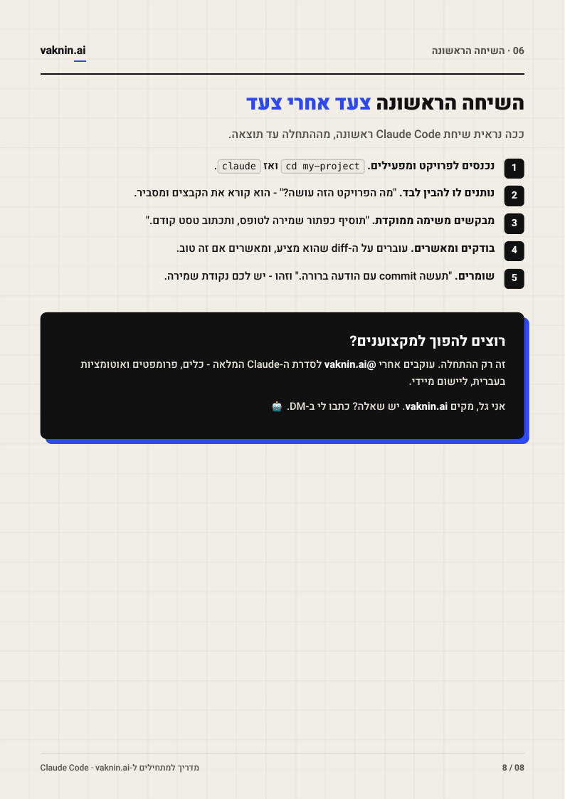

עמ' 1 / 8 · שער

עמ' 2 / 8 · מה זה + התקנה

עמ' 3 / 8 · טעויות 1-3

עמ' 4 / 8 · טעויות 4-5

עמ' 5 / 8 · הוורקפלואו המנצח

עמ' 6 / 8 · Cheat-sheet

עמ' 7 / 8 · תבנית CLAUDE.md + Checklist

עמ' 8 / 8 · השיחה הראשונה + CTA
